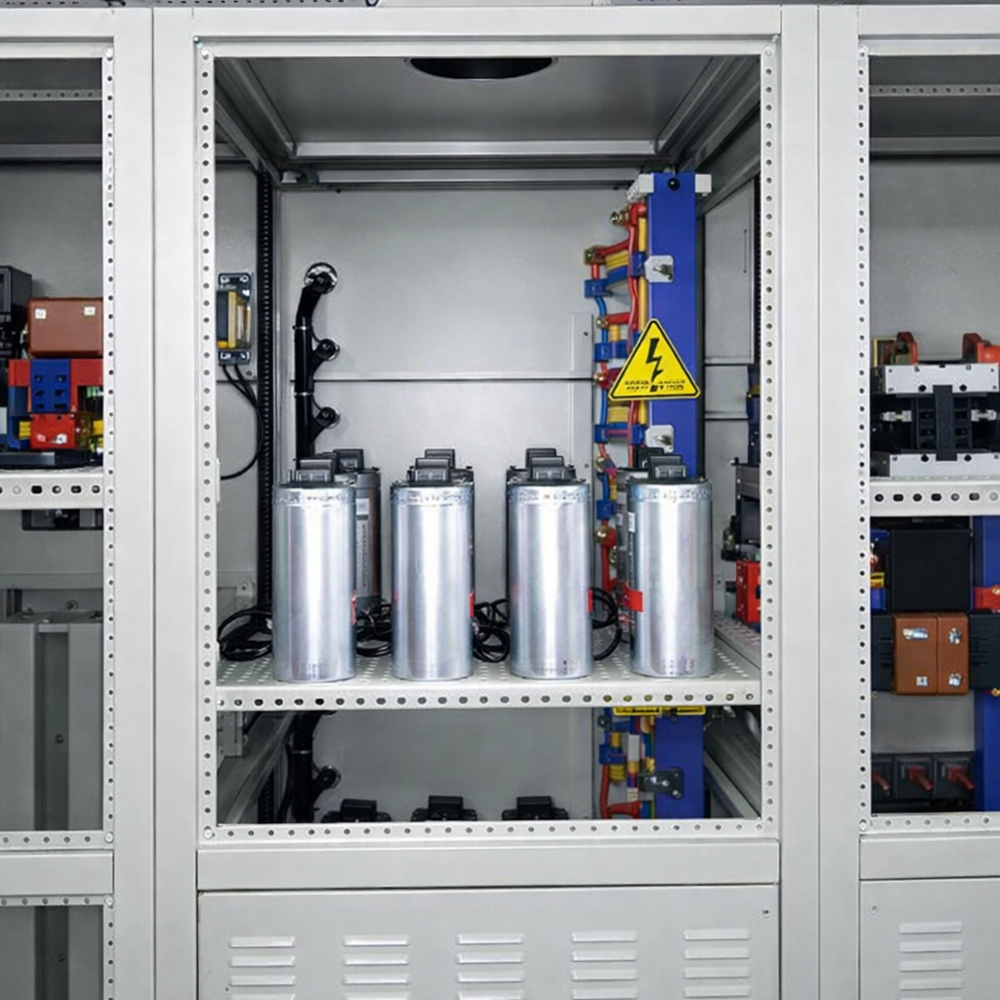

Tủ tụ bù công suất (PFC) là thiết bị quan trọng trong hệ thống điện hạ thế, có chức năng nâng cao hệ số công suất (cosφ), giảm tổn thất điện năng và tiết kiệm chi phí vận hành. Tủ tự động đóng/cắt các cấp tụ điện phù hợp với phụ tải thực tế, giúp hệ thống điện ổn định và hiệu quả hơn.
| Thành phần | Mô tả |
|---|---|
| Vỏ tủ | Thép sơn tĩnh điện hoặc inox, độ dày 1.2–1.5mm |
| Cánh tủ | 1 hoặc 2 lớp, gioăng cao su chống bụi và ẩm |
| Tụ bù | Tụ khô hoặc tụ dầu, điện áp 415V/440V |
| Bộ điều khiển | Tự động đo cosφ và điều khiển đóng/cắt |
| Thiết bị bảo vệ | MCCB, MCB, contactor, cầu chì, cuộn kháng |
| Thanh cái | Đồng hoặc nhôm, bọc co cách điện |
| Phân khoang bố trí | Rõ ràng giữa khu vực tụ, điều khiển và đấu nối, dễ bảo trì |